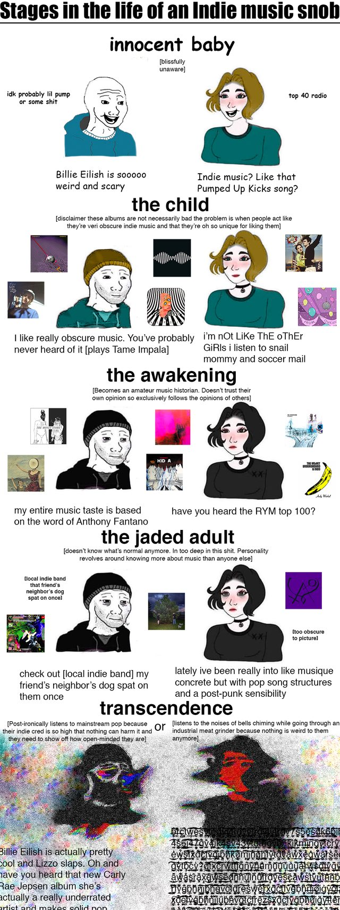

but it's probably in some sort of purgatory between the awakening and the jaded adult, defaulting to neither side.
regardless, as i've mentioned (and will keep mentioning), my favorite bands are Radiohead and Aphex Twin. i like electronica, experimental music, alt rock (or rock in general) -- The Strokes, Björk, Pink Floyd, Bon Iver, Mitski and Interpol being some of my other favorite artistes from these genres.
i also like hip-hop, but i have what hip-hop enthusiasts would call (they most definitely do) a very basic taste -- Kanye West, Tyler The Creator, Kendrick Lamar, Earl Sweatshirt and Frank Ocean. i have been getting really into Deutschrap recently, and my new favorite artist is Prezident.
besides all that, i am a fan of Lana Del Rey and Fiona Apple too; Norman Fucking Rockwell is my most listened-to album of all time.
i pretend like i listen to French music in order to make the Ladies think i'm cultured, but i only really listen to 3 songs.
i also listen to absolute garbage music (100gecs and the like), which is a guilty pleasure for me and torture for my ears
anyways, if you want to get a sense of what i listen to in general, i think this playlist describes it fairly well:
the music sub-blog
here, i will be posting my album reviews and albums of the week, hopefully regularly. but let me first familiarise you with my music taste.

i like to believe that i am a jaded adult.
but it's probably in some sort of purgatory between the awakening and the jaded adult, defaulting to neither side.
regardless, as i've mentioned (and will keep mentioning), my favorite bands are Radiohead and Aphex Twin. i like electronica, experimental music, alt rock (or rock in general) -- The Strokes, Björk, Pink Floyd, Bon Iver, Mitski and Interpol being some of my other favorite artistes from these genres.
i also like hip-hop, but i have what hip-hop enthusiasts would call (they most definitely do) a very basic taste -- Kanye West, Tyler The Creator, Kendrick Lamar, Earl Sweatshirt and Frank Ocean. i have been getting really into Deutschrap recently, and my new favorite artist is Prezident.
besides all that, i am a fan of Lana Del Rey and Fiona Apple too; Norman Fucking Rockwell is my most listened-to album of all time.
i pretend like i listen to French music in order to make the Ladies think i'm cultured, but i only really listen to 3 songs.
i also listen to absolute garbage music (100gecs and the like), which is a guilty pleasure for me and torture for my ears
anyways, if you want to get a sense of what i listen to in general, i think this playlist describes it fairly well: